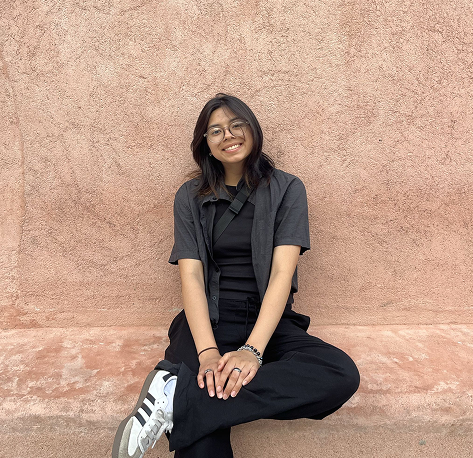

Maika O.
Director
Maika is an amateur filmmaker with ‘pasta night’ being their directorial debut. They are currently attending the University of Wisconsin-Milwaukee in an undergraduate program and like to spend their time being inspired by friends, playing tennis, and playing music.
“This project centers around my film, ‘pasta night.’ I’ve created a promotional website allowing you to learn more about the creation of the film and even watch the film itself!”